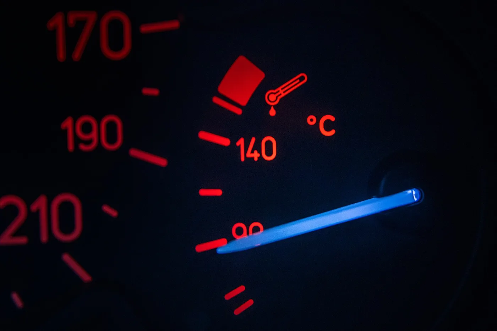

▲ 엔진룸 안에는 여러 개의 액체 저장통이 있다. 냉각수 보조탱크는 그중 가장 자주 잊히는 쪽이다 ⓒ Colin Venable, Wikimedia Commons (CC0)
엔진오일 교환주기는 대부분 압니다. 그런데 냉각수를 언제 갈았는지 기억하는 사람은 드뭅니다.
보닛을 열면 워셔액 통 옆에 또 하나의 반투명 통이 있습니다. 그게 냉각수 보조탱크입니다.
이 액체는 여름에는 엔진이 끓지 않게, 겨울에는 얼지 않게 합니다. 방치하면 엔진 자체가 손상됩니다.
1. 이 액체가 하는 세 가지 일
냉각수를 "엔진을 식히는 물" 정도로 아는 경우가 많은데, 실제로는 세 가지 일을 동시에 합니다.
- 과열 방지 — 엔진에서 발생한 열을 흡수해 라디에이터로 옮긴다. 순수한 물보다 끓는점이 높아 고온에서 유리하다.
- 동결 방지 — 겨울에 얼지 않게 한다. 물은 얼면 부피가 늘어나 엔진 블록을 깨뜨릴 수 있다. "부동액"이라는 이름이 여기서 나왔다.
- 부식 방지 — 냉각 계통 내부의 금속 부식과 물때를 막는 첨가제가 들어 있다. 이 첨가제가 시간이 지나면서 소모되는 것이 교환이 필요한 진짜 이유다.
세 번째가 핵심입니다. 냉각수는 줄어들지 않아도 성능은 떨어집니다. "양이 그대로니 괜찮다"가 통하지 않는 이유입니다.
2. 언제 갈아야 하나
제품에 따라 주기가 크게 다릅니다.
| 구분 | 교환주기 |
|---|---|
| 일반 부동액 | 약 2년 또는 4~6만km |
| 장수명(LLC) 부동액 | 10년 또는 20만km 수준 |
차이가 다섯 배 이상 납니다. 그래서 내 차에 어떤 종류가 들어 있는지를 아는 것이 먼저입니다. 매뉴얼이나 보조탱크 라벨에서 확인할 수 있습니다.
장수명 제품이라도 "10년 무점검"은 아닙니다. 교환 주기가 길 뿐, 양과 상태는 주기적으로 봐야 합니다.
주행거리와 무관하게 조기 교체가 필요한 신호도 있습니다.
- 색이 변했다 — 원래 색(녹색·분홍 등)에서 갈색이나 탁한 색으로 바뀌었다면 부식이 진행 중일 수 있다
- 찌꺼기나 침전물이 보인다
- 냄새가 난다
- 자꾸 줄어든다 — 어딘가 새고 있다는 뜻이다. 보충으로 넘길 문제가 아니다

▲ 조립 중인 차체라 냉각 계통 구조가 그대로 드러난다. 상단 흰색 통이 냉각수 보조탱크, 아래가 라디에이터다 ⓒ Brian Snelson, Wikimedia Commons (CC BY 2.0)
3. 50대 50이라는 비율
부동액은 원액을 그대로 넣는 것이 아니라 물과 섞어 씁니다. 기준은 50대 50입니다. 국산차 기준으로는 부동액 45~50%가 권장 범위입니다.
많이 넣으면 더 좋은 것 아닌가? 그렇지 않습니다.
부동액 원액은 물보다 열 전달 능력이 떨어집니다. 농도를 지나치게 높이면 동결점은 낮아지지만 냉각 성능이 나빠집니다. 반대로 너무 묽으면 겨울에 얼 수 있습니다.
섞을 물도 중요합니다. 반드시 증류수나 전용 희석수를 써야 합니다.
수돗물은 권장되지 않습니다. 미네랄과 염소가 들어 있어 냉각 계통 내부에 물때를 만들고 부식을 앞당깁니다. 급할 때 소량 보충하는 것과, 상시로 수돗물을 쓰는 것은 다른 이야기입니다.
이미 희석돼 나오는 제품도 있습니다. 이 경우 물을 더 섞으면 농도가 무너지므로, 제품 표기를 확인하고 그대로 넣어야 합니다.
4. 직접 확인하는 법 — 그리고 절대 하면 안 되는 것
점검 자체는 어렵지 않습니다.
- ① 엔진이 완전히 식은 상태에서 보닛을 연다
- ② 냉각수 보조탱크를 찾는다 — 반투명 플라스틱 통이며 옆면에 MIN / MAX 눈금이 있다
- ③ 액면이 두 눈금 사이에 있는지 본다
- ④ 색과 투명도를 함께 본다 — 탁하거나 갈색이면 점검 대상이다
여기서 절대 하면 안 되는 것이 있습니다.
엔진이 뜨거울 때 라디에이터 캡을 여는 것입니다. 냉각 계통은 가압 상태라 캡을 여는 순간 끓는 냉각수가 분출됩니다. 심한 화상으로 이어집니다.
보조탱크 뚜껑도 마찬가지입니다. 보충이 필요하면 엔진이 완전히 식은 뒤에 합니다.

▲ 냉각수 온도계. 물방울이 달린 온도계 심볼이 냉각 계통 표시이며, 바늘이 붉은 구간으로 넘어가면 과열이다 ⓒ Ivan Radic, Wikimedia Commons (CC BY 2.0)
주행 중 냉각수 온도 경고등이 켜졌다면, 안전한 곳에 정차하고 시동을 끈 뒤 열이 내려갈 때까지 기다려야 합니다. 그대로 달리면 헤드 개스킷 손상으로 수리비가 자릿수를 바꿉니다.

▲ 점검은 반드시 엔진이 완전히 식은 상태에서 한다
5. 전기차에도 냉각수가 있다
흔한 오해 하나. "전기차는 엔진이 없으니 냉각수도 없다"입니다.
있습니다. 전기차에서 냉각수는 배터리와 전력 변환 장치(인버터), 모터의 온도를 관리합니다.
오히려 배터리 온도 관리는 주행거리와 수명에 직결됩니다. 배터리는 너무 뜨거워도, 너무 차가워도 성능이 떨어지기 때문입니다.
다만 관리 방식은 다릅니다. 전기차용 냉각수는 전기 절연 특성이 요구되는 경우가 있어, 내연기관용 제품을 임의로 넣으면 안 됩니다. 반드시 제조사 지정 규격을 따라야 합니다.
전기차 배터리 온도가 성능에 미치는 영향은 별도로 정리해둔 기사가 있습니다.

▲ 엔진오일처럼 냉각수도 주기가 있는 소모품이다. 다만 점검 빈도는 훨씬 낮게 관리된다
6. 정리
냉각수(부동액)는 과열 방지, 동결 방지, 부식 방지 세 가지를 담당합니다. 양이 줄지 않아도 첨가제가 소모되므로 주기 교환이 필요합니다.
일반 부동액은 약 2년 또는 4~6만km, 장수명 제품은 10년 또는 20만km 수준입니다. 희석은 물과 50대 50이 기준이고, 수돗물 대신 증류수를 씁니다.
엔진이 뜨거울 때 라디에이터 캡을 여는 것은 절대 금물입니다. 냉각수 온도 경고등이 켜지면 즉시 정차하고 시동을 끈 뒤 식혀야 합니다.